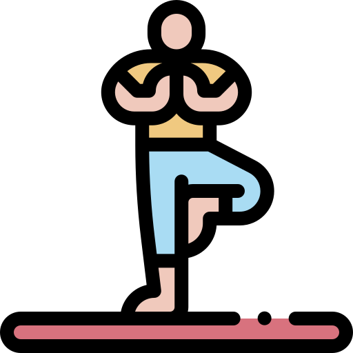
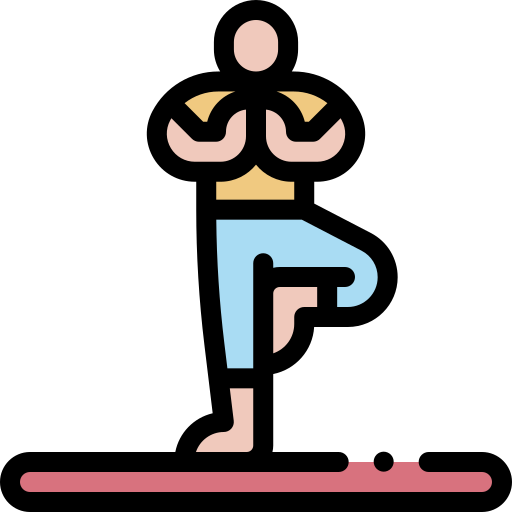
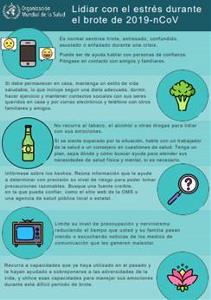
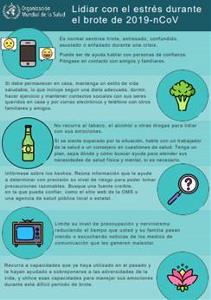

Quedate en casa

Las pruebas científicas obtenidas hasta ahora indican que el virus de la COVID-19 puede transmitirse en CUALQUIER ZONA, incluidas las de clima cálido y húmedo. Con independencia de las condiciones climáticas, hay que adoptar medidas de protección si se vive en una zona donde se hayan notificado casos de COVID-19 o si se viaja a ella.
La mejor manera de protegerse contra la COVID-19 es lavarse las manos con frecuencia. De esta manera se eliminan los virus que puedan estar en las manos y se evita la infección que podría producirse al tocarse los ojos, la boca y la nariz.
La temperatura normal del cuerpo humano se mantiene en torno a 36,5° y 37°, con independencia de la temperatura exterior o de las condiciones meteorológicas. Por lo tanto, no hay razón para creer que el frío pueda matar el nuevo coronavirus o acabar con otras enfermedades. La forma más eficaz de protegerse contra el 2019-nCoV es limpiarse las manos frecuentemente con un desinfectante a base de alcohol o con agua y jabón.
No se sabe con certeza cuánto tiempo sobrevive el virus causante de la COVID-19 en una superficie, pero parece comportarse como otros coronavirus. Los estudios realizados (incluida la información preliminar disponible sobre el virus de la COVID-19) indican que los coronavirus pueden subsistir en una superficie desde unas pocas horas hasta varios días. El tiempo puede variar en función de las condiciones (por ejemplo, el tipo de superficie, la temperatura o la humedad del ambiente).
Si cree que una superficie puede estar infectada, límpiela con un desinfectante común para matar el virus y protegerse de este modo a usted mismo y a los demás. Lávese las manos con un desinfectante a base de alcohol o con agua y jabón. Evite tocarse los ojos, la boca o la nariz.
No. Rociar todo el cuerpo con alcohol o cloro no sirve para matar los virus que ya han entrado en el organismo. Pulverizar estas sustancias puede dañar la ropa y las mucosas (es decir, los ojos, la boca, etc.). Tanto el alcohol como el cloro pueden servir para desinfectar las superficies, siempre que se sigan las recomendaciones pertinentes.
Hay varias medidas que se pueden aplicar para protegerse del nuevo coronavirus. Empiece por limpiarse las manos con frecuencia con un gel hidroalcohólico o con agua y jabón.
El riesgo de contraer la COVID-19 por contacto con las heces de una persona infectada parece ser bajo. Aunque las investigaciones iniciales apuntan a que el virus puede estar presente en algunos casos en las heces, la propagación por esta vía no es uno de los rasgos característicos del brote.
La OMS está estudiando las investigaciones en curso sobre las formas de propagación de la COVID-19 y seguirá informando sobre los nuevos resultados. No obstante, se trata de un riesgo y por lo tanto es una razón más para lavarse las manos con frecuencia, después de ir al baño y antes de comer.
Los coronavirus son una extensa familia de virus que son comunes entre los murciélagos y otros animales. En raras ocasiones las personas se infectan por estos virus, que luego pueden propagarse a otras personas. Por ejemplo, el SRAS-CoV iba asociado a las civetas y el MERS-CoV se transmite a través de los dromedarios. Todavía no se ha confirmado el posible origen animal de la COVID-19. Como medida de protección al visitar mercados de animales vivos o en otras situaciones parecidas, evite el contacto directo con los animales y las superficies que estén en contacto con ellos. Asegúrese de que en todo momento se observen prácticas adecuadas de higiene de los alimentos. Manipule con cuidado la carne, la leche o los órganos de animales crudos para evitar la contaminación de alimentos no cocinados y evite el consumo de productos animales crudos o poco cocinados.
Aunque ha habido un caso de un perro infectado en Hong Kong, hasta la fecha no hay pruebas de que un perro, un gato o cualquier mascota pueda transmitir la COVID-19. La COVID-19 se propaga principalmente a través de las gotículas producidas por una persona infectada al toser, estornudar o hablar. Para protegerse a sí mismo, lávese las manos a fondo frecuentemente.
La OMS se mantiene al tanto de las últimas investigaciones a este respecto y otras cuestiones relacionadas con la COVID-19 y proporcionará información actualizada de las conclusiones que se vayan obteniendo.

 

 
